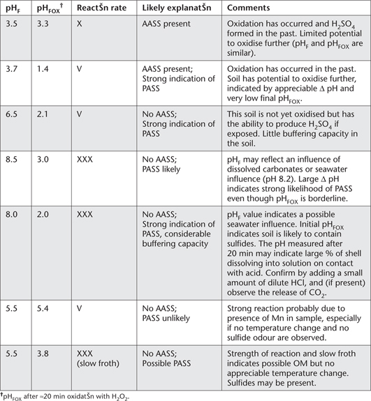

This practical field test was developed particularly for use on ASS-affected areas and drain spoil in the canelands of coastal New South Wales and east-coastal Queensland; i.e. from the Clarence River area of northern New South Wales to the Cairns region of North Queensland. Low cost and simplicity, however, makes it attractive for other uses across the same soil types and climatic conditions, particularly when ≈ 10–15% of samples from the test area go to an accredited ASS laboratory for confirmation (Rayment et al. 2001; Raymond and Rayment 2003). The savings in analytical costs and time can be considerable.
Critical components are: (i) a field estimate of soil texture (sandy or silt-clay); (ii) a field estimate of pH (pHF); (iii) a simple measure of field pH after at least 20 min oxidation with 30% w/v reagent-grade H2O2 at pH 5.5 (pHFOX), and (iv) a ‘look-up’ table for the quantity of lime (kg/m3). The ‘look-up’ table was derived mathematically from the results of around 2000 field and 2000 corresponding laboratory samples. The liming rates it predicts are expected to fully neutralise the actual and potential acidity of pyrite-containing drain spoil (Raymond and Rayment 2003). It is possible to arrange essential apparatus, reagents and a portable pH meter into a convenient ASS field test kit (see Figure 20.6 and the sub-section on ASS Field Kit Components).
pH buffers
Obtain commercially or prepare as described in Method 4A1. These should cover the range from around pH 4.0–9.2.
30% Hydrogen Peroxide
Use 30% technical or analytical grade hydrogen peroxide (H2O2). Check the acidity of each new batch of chemical, which should contain less than the equivalent of 6 mol H+/tonne. Adjust, typically with 0.05 M NaOH, to pH 5.5 before use in the ‘final oxidation’ step. Handle and store this reagent with caution, as H2O2 is hazardous and is not permitted on domestic airlines. Users should wear PVC gloves and safety glasses when using the chemical. Operations involving H2O2 should be carried out only where there is excellent ventilation.
≈ 0.05 M Sodium Hydroxide
Dissolve 2.05 g of fresh, high-grade sodium hydroxide (NaOH) in deionised water. Cool to room temperature and make to 1 L. This solution is used to adjust H2O2 to pH 5.5.
≈ 1.0 M Hydrochloric Acid
Prepare from a commercially purchased solution. Alternatively add 100 mL of 31.5–33% w/v (or equivalent) HCl to around 200 mL of deionised water, mix well, cool to room temperature, then make to 1.0 L with deionised water. This solution is used with care to test soil samples for the presence of shell and other carbonates.
ASS Field Kit Components (see Figure 20.6)
• Portable pH meter (charged and calibrated as per manufacturer’s instructions)
• Combined spear-point glass and reference electrode
• pH buffering solutions
• Temperature probe
• Test tubes (wide, clear, robust and heat resistant)
• Test tube racks (one for pHF and one for pHFOX tests)
• Wooden skewers or stirrers
• H2O2 solution at pH 5.5
• Dilute NaOH (to adjust H2O2 to pH 5.5)
• Dilute HCl to test for presence of shell
• Distilled/deionised water
• Safety glasses, gloves, tissues and other protective clothing
• Instruction manual and look-up table.
Select sampling points at soil profile intervals of ≈0.25 m or at least one test per soil horizon (multiple sub-samples lessen the chance of failing to detect a narrow band of pyrite or jarosite). Test and calibrate a battery-powered field pH meter equipped with a robust combination glass-reference electrode with a spear-point. In addition, prepare test tubes in the rack, marked with sampling depths. Use separate racks for pHF and pHFOX tests to lessen the risk of sample to sample contamination, as pHFOX reactions, following the addition of H2O2, can be vigorous to violent (see Figure 20.5).
Field texture class
Manually test, by ‘ribboning while moist’, to obtain the soil texture class of typical material from each sampling point. It helps to moisten soil in the palm of the hand with fresh water, continuously mixing and working until the soil just fails to stick to the fingers. Now attempt to shear out some of the soil into a ribbon. Behaviour of soil during this shearing action characterises field texture. Specifically, soil with a high sand content has very little coherence and cannot be moulded (Figure 20.7), whereas soil with high clay content can be ribboned out to 75 mm or more (Figure 20.8). Only two texture groupings are required, namely sandy and silt-clay. Record the most appropriate field texture classification.
Figure 20.6. Essential apparatus, reagents and a portable pH meter arranged in a sturdy case as a convenient ASS field test kit (from Plunkett et al. 2003). Also needed are a sampler, a bucket for discarded soil and spent H2O2, a bucket and brush for rinsing test tubes in the field, data recording sheets (or equivalent), bulk water for rinsing, and a first-aid kit, especially eye wash solutions.
Field pH test (pHF)
Remove one teaspoon volume of a representative sample of soil from the soil profile at the appropriate depth. Place half of the teaspoon-size sample into the pHF test tube. (Retain the other half teaspoon of sample for pHFOX testing. It is important that the two sub-samples come from the same depth and that they are visually similar.)
Add enough distilled or deionised water into the pHF test tube to make a paste, stir with a clean skewer to remove all lumps, then continue brief stirring to produce a mix with a texture of grout or white sauce. Do not leave soil samples in test tubes without water for more than 10 min to prevent the possibility of rapid oxidation reactions (see Note 1).
Immediately place the spear-point electrode into the pHF test tube, ensuring the spear-point is totally submerged in the soil/water paste. Never stir the paste with the electrode. This will damage the semi-permeable glass membrane. Record the pHF value on a datasheet when the reading has stabilised.
Figure 20.7. Field testing the texture of coarse (sandy) soil.
Figure 20.8. Examples of field testing the texture of silt-clay soil.
Field pH following H2O2 oxidation (pHFOX)
Initially proceed in a similar manner to the pHF procedure by placing the second half-teaspoon of sample into the corresponding pHFOX heat-resistant test tube described earlier. Carefully add several drops of 30% H2O2 (pre-adjusted to pH 5.5) to soil and stir with a clean skewer to remove all lumps and to ensure full contact of the sample and H2O2.
Allow 20 min for reaction. If substantial sulfides are present, reaction may be vigorous and instantaneous (see Figure 20.5). Keep careful watch and prevent cross contamination of samples in the rack. If reaction is violent, and soil/peroxide mix is escaping from the test tube, add a minimum amount of deionised water via a wash bottle to cool the reaction and control overflow. Too much deionised water may dilute the mixture and affect the pH value.
Add further 30% H2O2 until the soil/peroxide oxidation reaction has slowed, using best judgement to determine completion of the reaction. If no reaction seems to be occurring, place the pHFOX test tube into hot water (≈50–60°C; especially in cooler weather), or in direct sunlight, to encourage initial reaction. If the sample starts to ‘bubble’, remove test tube immediately from hot water and place in rack. Obviously, there will likely be samples (or horizons within a profile) without pyrite. These will not exhibit any significant reaction with 30% H2O2.
Wait for soil/peroxide mixture to cool. This may take ≈10–20 min as reaction temperature may reach and exceed 90°C (see Note 2).
Place the spear-point pH electrode into test tube, ensuring its point is totally submerged in soil/peroxide mixture, but do not stir the mixture with the electrode, as this will damage the semi-permeable glass membrane.
Record the pHFOX measurement on a data sheet to one decimal point of precision and also the observed rate of reaction, based on the use of ‘X’ and ‘V’. How to record different reaction rates and likely meanings in conjunction with soil pH values are shown in Table 20.5, noting that the greater the number of ‘X’, the more vigorous the oxidation reaction; ‘V’ indicates a violent oxidation reaction. Visual examples are shown in Figure 20.5.
Lime Rate by ‘Look-up’
Use the ‘look-up’ table (Table 20.6) and the particular soil pHFOX value to obtain a predicted estimate of the rate (units of kg/m3) of agricultural limestone (see Note 1 of Method 16A1) expected to fully neutralise the potential acid hazard from drain spoil in New South Wales and Queensland canelands. The estimate incorporates a margin of safety to ensure adequate lime is applied.
Report field estimates of soil texture, current soil pH (pHF), field pH after oxidation (at least 15 min of oxidation with H2O2; pHFOX), and lime requirement for drain spoil (kg/m3).
1. In some instances, monosulfidic material may start to oxidise in less than 5 min, and this may substantially affect pHF results.
2. Do not place the spear-point pH electrode in high temperature pastes: inaccurate readings will be produced by damaged equipment. Use temperature probe if unsure. Ideally, the pH values are best measured at ambient temperature (20–25°C).
Table 20.5. Examples of different reaction rates and what they may indicate at different values of pHF and pHFOX; sourced from Plunkett et al. (2003).

Table 20.6. Lime rate ‘look-up’ table for different values of pHFOX and two field soil texture classes. (Sourced from Plunkett et al. 2003, and Raymond and Rayment 2003).
|
Lime Required (kg/m3) |
|
pHFOX |
Fine & Medium soil texture |
Coarse soil texture |
0.25 |
374 |
85 |
0.30 |
289 |
66 |
0.35 |
232 |
54 |
0.50 |
140 |
33 |
0.75 |
79 |
19 |
1.00 |
53 |
13 |
1.25 |
38 |
9 |
1.50 |
30 |
7 |
2.00 |
20 |
5 |
2.50 |
14 |
4 |
3.00 |
11 |
3 |
4.00 |
7 |
2 |
5.50 |
5 |
1 |
Figure 20.6. Essential apparatus, reagents and a portable pH meter arranged in a sturdy case as a convenient ASS field test kit (from Plunkett et al. 2003). Also needed are a sampler, a bucket for discarded soil and spent H2O2, a bucket and brush for rinsing test tubes in the field, data recording sheets (or equivalent), bulk water for rinsing, and a first-aid kit, especially eye wash solutions.